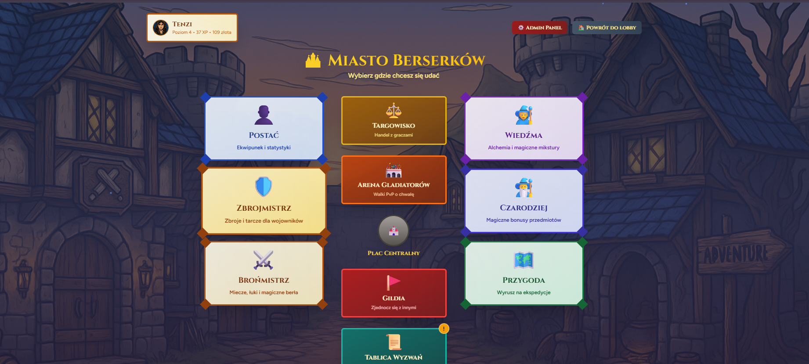
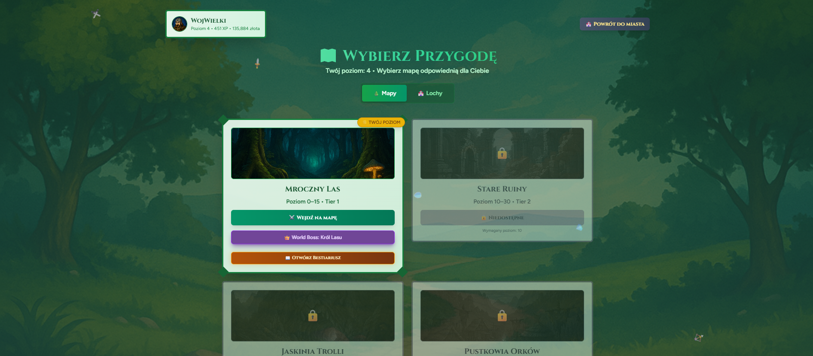
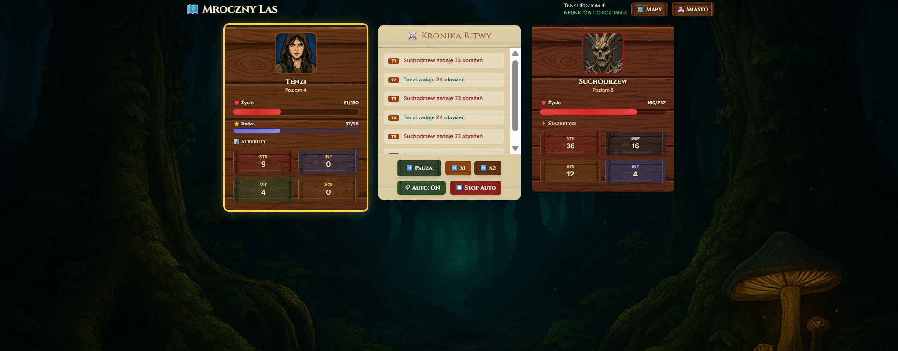

Odtwórz Zwiastun
ŚWIAT POGRĄŻONY W CHAOSIE...
WYKUJ SWOJĄ LEGENDĘ
ZDOBYWAJ EPICKIE ARTEFAKTY
Wykuj rynsztunek, który wstrząśnie fundamentami tego świata!

ROZWIJAJ SWOJĄ POSTAĆ
WYKLUWAJ POTĘŻNE CHOWAŃCE
PODEJMIJ WYZWANIE


ZDOMINUJ ARENĘ
Zagraj za darmo
Bez pobierania • W przeglądarce